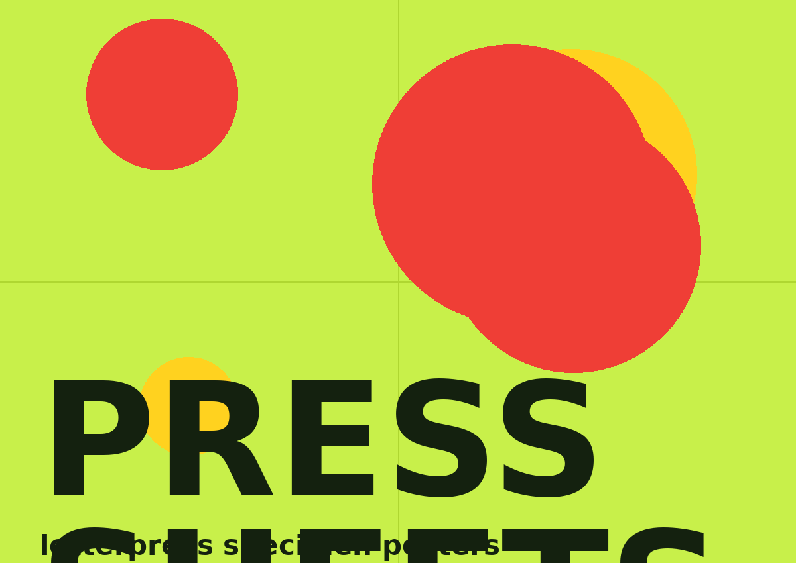
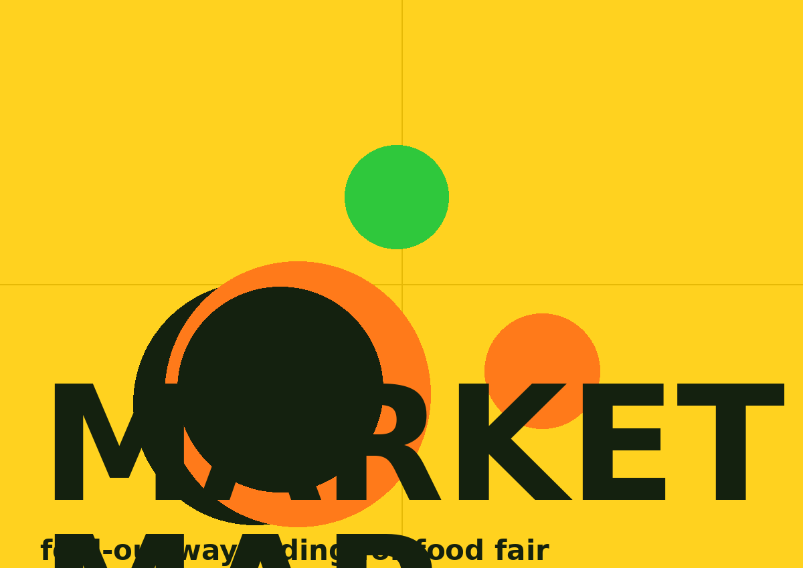

Things with a spine, a fold, or a smell. Print work gets the slow treatment — paper stocks compared by hand, ink limits respected, margins argued over at actual size.

Field Guide
A 48-page risograph zine about urban foraging, printed in three passes of deliberately imperfect colour. Registration errors became part of the voice instead of a problem to fix.

Seed Catalogue
Annual report for a seed cooperative, structured like a herbarium: each department gets a specimen plate, each milestone a field note. Data tables dressed as planting logs.
Every print job starts with a paper test.
If it doesn't feel right between two fingers, it doesn't ship.

Press Sheets
A growing set of letterpress specimen posters — one typeface per sheet, one irrational colour pairing per typeface. The first steps toward a full editorial practice.

Market Map
A fold-out map for a weekly food market, designed to be read while walking, holding coffee, and negotiating with a cheese vendor. Icons first, words second.